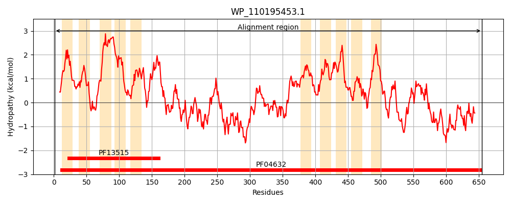
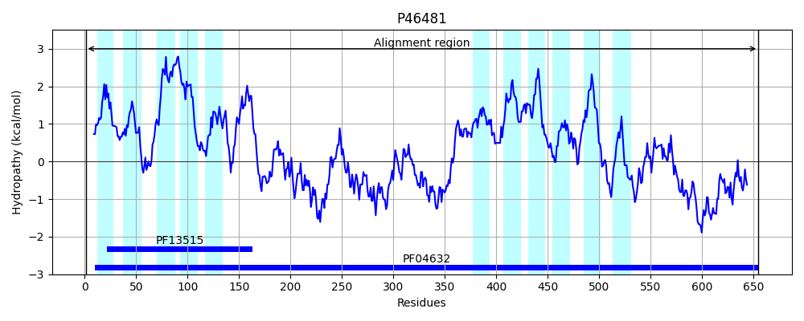
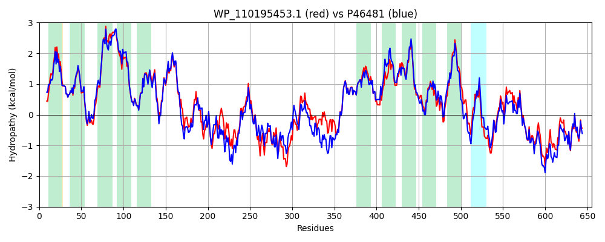

Hit Accession: P46481
Hit TCID: 2.A.85.1.2
Hit Description: gnl|BL_ORD_ID|10627 gnl|TC-DB|P46481|2.A.85.1.2 HYPOTHETICAL 73.6 KDA PROTEIN IN ARGR-CAFA INTERGENIC REGION (F655) - Escherichia coli.
Mach Len: 655
e:0.000000
Query TMS Count : 10
Hit TMS Count: 11
TMS-Overlap Score: 9.000000
Predicted Substrates:CHEBI:17879;4-hydroxybenzoate
BLAST Alignment:
Score: 2811 , Bit scores: 1087 bits, E-value: 0.0e+00, Alignment length: 655, Percentage identity: 81
Query: 1 MGTYTIAPRHLRFAIKLACAVVLALFVGFHFQLETPRWAVLTAAIVAAGPAFAAGGEPYSGAIRYRGMLRIAGTFIGCIAALIIIILMIRAPLLMMLVCCLWAGFCTWISSLVKVENSYAWGLAGYTALIIIITIHTNPMLAPQFAVERCSEIVIGIVSAIVADLLFSPRSIKKEIDLELDNLLITQYKLMQLCVAHGEKEEVDQAWGALVRRTTALEGMRSNLIMESSRWAKANQRLKAINTLSLTLITQACETYLIQNSRPEMVTDDYRELFAEPVETVQDVHQQLKRMRRFLTWKGEHNTPVTIYSWVGAATRYLLLKRGVVGNTKISRIEDSVLRGEAVVKVESAERHHAMVNFWRTSVSCILGTLFWLWTGWTSGSGAMVMIAVVTALAMRLPNPRMVAMDFLYGTLAALPLGTLYFLVIMPATQQSMLLLCISLAAMAFFIGIEVQKRRLGSLGALASTINILVLDNPMQFQFSQFLDSALGQIVGCFLALMVILLVRDNSRARTGRVLLNQFVSAAVSSLTTNSARRKENHLPALYQQLFLLLNKFPGDVARFRLALTLIIAHQRLRDAPVPVNDDLSAFHRQLRRTADHVISAGSDDKRRRYFTQLLAELDVYQEKLRVWEASPQVTEPVRRLVEMLHKYQHVLTSS 655
MG ++IA +H+RFA+KLA A+VLALFVGFHFQLETPRWAVLTAAIVAAG AFAAGGEPYSGAIRYRG LRI GTFIGCIA L+III MIRAPLLM+LVCC+WAGFCTWISSLV++ENSYAWGLAGYTALII+ITI P+L PQFAVERCSEIVIGIV AI+ADLLFSPRSIK+E+D EL++LL+ QY+LMQLC+ HG+ E VD+AWG LVRRTTAL+GMRSNL MESSRWA+AN+RLKAINTLSLTLITQ+CETYLIQN+RPE++TD +RE F PVET QDVH+QLKR+RR + W GE TPVTIYSWV AATRY LLKRGV+ NTKI+ E+ +L+GE VKVESAERHHAMVNFWRT++SCILGTLFWLWTGWTSGSGAMVMIAVVT+LAMRLPNPRMVA+DF+YGTLAALPLG LYFLVI+P TQQSMLLLCISLA + FF+GIEVQKRRLGS+GALASTINI+VLDNPM F FSQFLDSALGQIVGC LA VILLVRD SR RTGRVLLNQFVSAAVS++TTN ARRKENHLPALYQQLFLL+NKFPGD+ +FRLALT+IIAHQRLRDAP+PVN+DLSAFHRQ+RRTADHVISA SDDKRRRYF QLL EL++YQEKLR+W+A PQVTEPV RL MLHKYQH LT S
Sbjct: 1 MGIFSIANQHIRFAVKLATAIVLALFVGFHFQLETPRWAVLTAAIVAAGTAFAAGGEPYSGAIRYRGFLRIIGTFIGCIAGLVIIIAMIRAPLLMILVCCIWAGFCTWISSLVRIENSYAWGLAGYTALIIVITIQPEPLLTPQFAVERCSEIVIGIVCAIMADLLFSPRSIKQEVDRELESLLVAQYQLMQLCIKHGDGEVVDKAWGDLVRRTTALQGMRSNLNMESSRWARANRRLKAINTLSLTLITQSCETYLIQNTRPELITDTFREFFDTPVETAQDVHKQLKRLRRVIAWTGERETPVTIYSWVAAATRYQLLKRGVISNTKINATEEEILQGEPEVKVESAERHHAMVNFWRTTLSCILGTLFWLWTGWTSGSGAMVMIAVVTSLAMRLPNPRMVAIDFIYGTLAALPLGLLYFLVIIPNTQQSMLLLCISLAVLGFFLGIEVQKRRLGSMGALASTINIIVLDNPMTFHFSQFLDSALGQIVGCVLAFTVILLVRDKSRDRTGRVLLNQFVSAAVSAMTTNVARRKENHLPALYQQLFLLMNKFPGDLPKFRLALTMIIAHQRLRDAPIPVNEDLSAFHRQMRRTADHVISARSDDKRRRYFGQLLEELEIYQEKLRIWQAPPQVTEPVNRLAGMLHKYQHALTDS 655 | Protein Hydropathy Plots: |
|---|
|  |  |
Pairwise Alignment-Hydropathy Plot:
|
|---|
|  |